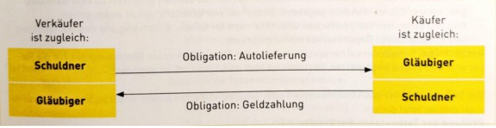

Eine Obligation ist ein Rechtsverhältnis, aufgrunddessen eine Partei (der Gläubiger) von der anderen Partei (dem Schuldner) eine bestimmte Leistungverlangen kann.
Die meisten Obligationen entstehen durch Verträge,also durch Vereinbarungen zwischenzwei oder mehreren Personen (Parteien).
Art 41-61 OR sowie einige andere Bestimmungen (z.B. Art. 333 ZGB und Art. 58 SVG)regeln das Recht der unerlaubten Handlungen (auch Haftpflichtrecht genannt). In diesemRechtsgebiet unterscheidet man drei Haftungsarten:
Zwei Beispiele: Aus Versehen haben Sie ein Zeitungsabonnementzweimal bezahlt oder denBetrag an eine Falsche Rechnungsadresse überwiesen.In beiden Fällen ist der Empfänger ohne gültigen Rechtsgrund“ ungerechtfertigt bereichert”worden. Damit entsteht für Sie natürlich die Verpflichtung (Obligation), Ihnen denBetrag zurückzuerstatten.
Finanzielle Auswirkungen einer Schädigung (z.B, Arzt-und Heilungskosten,Reparaturkosten oder Einkommensverlust
Widerrechtliches Verhalten des Schädigers (immergegeben,wenn wichtige Güter betroffensind; z.B. Beschädigung von Eigentum, Körperverletzungoder Tötung)
Kausalzusammenhang zwischen rechtswidrigen Verhalten und finanziellem Schaden(juristische Beurteilung des Zusammenhangs zwischen schädlicher Handlung und eingetretenem Schaden)
Zum Beispiel:Ein Autofahrer verursacht einen Zusammenstoss mit einem Fahrradfahrer. DerFahrradfahrer stürzt deshalb von seinem Fahrrad und bricht sich dabei sein Bein. Zwischen der Handlung des Autofahrers und der Verletzung desFahrradfahrers besteht somit einKausalzusammenhang
Verschulden des Schädigers (es sind zwei Punkte zu prüfen: 1. Urteilsfähigkeit desSchädigers; 2. Vorsätzliches oder fahrlässiges Verhalten)
Kausalhaftungen wird von verschiedenen Artikeln behandelt,dazu gehören:
Alle diese Tatbestände setzen wie schon Art. 41 Abs.1 OReinen Schaden, einen rechtlichen Kausalzusammenhang und eine widerrechtliche Schädigung voraus.
Man muss vertragsfähig, d.h. fähig sein, einen Vertrag rechtsgültig abzuschliessen.Vertragsfähig ist, wer handlungsfähig ist, bedeutet,man muss volljährig sein (es geltenAusnahmen -> beschränkt handlungsunfähig) und urteilsfähig sein (man muss dieFähigkeit haben, vernünftig handeln zu können).
5 Voraussetzungen
Der Vertrag kommt dann zustande, wenn beide Parteieneinig sind und dies auch zumAusdruck bringen (laut OR, wenn dieübereinstimmendegegenseitige Willensäusserungvorliegt). Falls dies nicht der Fall ist, ist man an nichts gebunden, es gibt keinen Vertrag derzu erfüllen ist. D.h dass erst wenn Antrag und Annahmeübereinstimmen, ein Vertragentsteht.
Ein Antrag ist, wenn eine Partei der anderen ParteieinAngebotmacht für eine Ware,Dienstleistung, etc.
Wann ein Antrag verbindlich ist, ist nicht immer eindeutig.Der Antragsteller wird in folgendenFällen nicht gebunden:
Die Versendung von Tarifen, Preislisten und der gleichen bedeuten an sich keinen Antrag(Art. 7 Abs. 2 OR
Die Form eines Vertrags ist frei (Art. 11 OR) : es muss kein geschriebener Vertrag vorliegen(es gelten Ausnahmen), wobei man jedoch vermerken muss, dass es immer besser ist, schriftlichen Nachweis zum abgemachten zu haben.
Inhalt und Abschluss des Vertrags:Beliebige Verträge können mit beliebigem Inhalt abgeschlossen werden, sofern sie nicht rechtswidrig sind. D.h, es kann auch Verträge geben,an der nur eine Partei profitiert